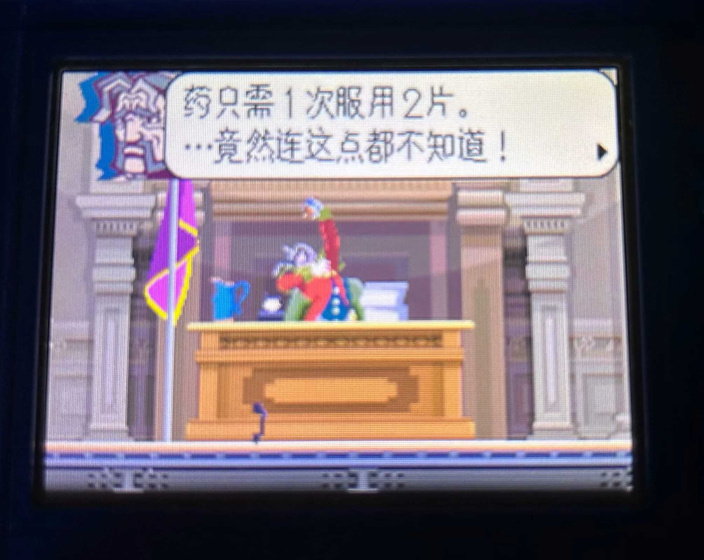
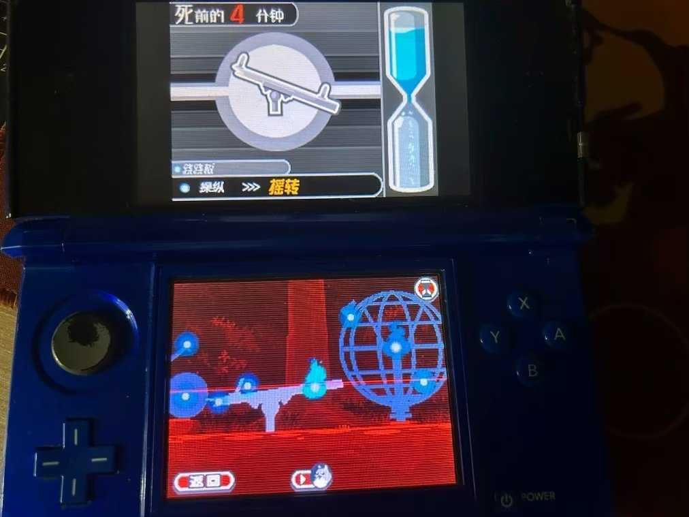
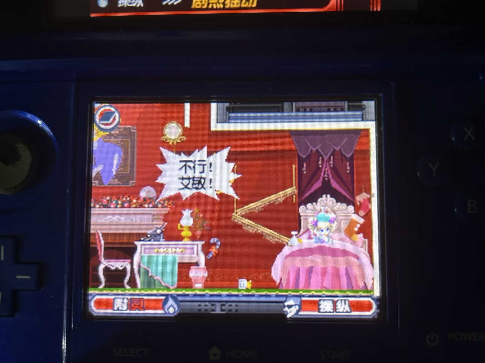

前言
在这个高度信息化的时代，可供自己发泄表达欲的平台太多了，我自己就有不限于知乎文章、豆瓣影评、微信朋友圈、QQ空间等渠道来推送自己的各种日常，因此对这个以前搭的博客似乎就不是很上心了，一是相比于上面这些平台发post更麻烦，二是也很难被别人看到（相比而言）。“被人看到”也是表达欲本身的一种诉求吧。这就导致在这里发文章的频率很低。
不过想来想去，博客搭出来本身也不应该作为一种任务吧，想发点啥就发了。抱着这种心态想，心里就释然了许多。再者，不同渠道之间的文章还可以进行搬运嘛，一稿多投。我自己并不是一个喜欢只把文章发在一处的人（作为比较，我的一个同学就只在自己的Telegram频道分享近况）。
以及博客的搬家计划也应该加上日程了，最近看了一位老哥用RSS自动收集信息放到Notion+自动化筛选推送到博客的方法，感觉十分受用，自己作为一个计算机专业的学生确实也应该整点自动化了。
不管怎么说，还是先来看这篇正文吧。
速评
最近继续嗯造这部跟了我五六年的Nintendo 3DS，挑时间通关了《幽灵诡计》。这款游戏在NDS、3DS和NS都可以玩（其中Switch上是高清重制版）。
由于是巧舟的作品，所以处处都有着《逆转裁判》的即视感：熟悉的分支对话选项，夸张的人物动作表演，经典的通过塑造习惯让观众快速记住角色的脸谱化手法。
剧情非常顶，处处都是伏笔，设定几乎挑不出bug（现在发现不合理的地方后面基本都会圆回去），最后几章的揭晓答案甚至让我有种《控方证人》的感觉。
解谜方面机制十分新颖——设定上“你”已经死了，你必须操作灵魂在物体（灵核）间穿梭，并通过与物品的交互推进剧情、改变命运的走向。玩家可以在正常视野和灵魂视野间切换。不过难度上大部分都不高，熟悉之后基本就能发现固定套路了（弹东西，引火…）。好在游戏流程不长，还不至于到腻烦的程度。
不过有一个想吐槽的地方就是后面操控多个灵魂的时候，想要移动必须先腾位置，因为默认连接另一个灵魂的位置是“对话”，有时候略显麻烦。
总的来说，五星级作品，属于不玩亏大发系列，这里不详细评论剧情了，剧透挺影响体验的。喜欢《逆转裁判》系列的朋友千万不能错过。可惜的是听说这个作品当初发售时候销量并不是很好，属于叫好不叫座的类型。真是令人感叹。
部分游戏画面
手机摄像头怼着我的3DS直拍的图（没办法，懒得在这个古董游戏机上截图再用读卡器传到电脑上）。



